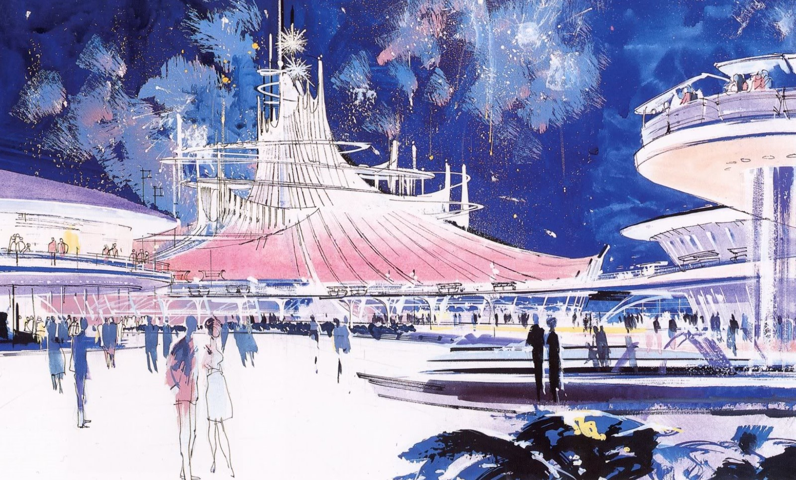
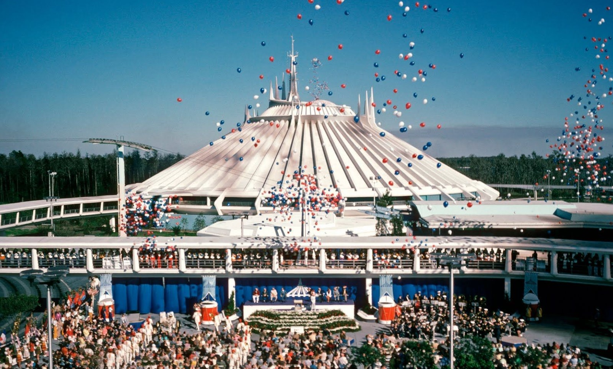

History & Timeline
Learn about how the iconic space-themed rollercoaster came to be.
The concept for Space Mountain, one of Disney's most iconic attractions, can traced back to the 1950s and Walt Disney's interest in space exploration. He was captivated by the Space Age and the emerging interest in space travel during that era, and after the opening of the Matterhorn Bobsleds at his California Disneyland park, Walt knew coasters had a place at his park. This fascination with space led to the idea of a space-themed roller coaster- one that wouldn't be very different from the Space Mountain we know of today. However, Walt wouldn't get to realize this concept in his lifetime, but after Disney World opened in 1971, his Imagineers knew how to move forward.
In order to design the coaster, the Imagineers partnered with Arrow Dynamics- a popular and well-experienced coaster manufacturer. The design and development of Space Mountain were complex and ambitious. Originally, Space Mountain consisted of four seperate coasters in one white, glossy mountain-shaped style building, with coaster track flowing in and outside of the structure- but it would eventually be resized to contain just two mirrored tracks, placed side-by-side to each other, allowing for two different experiences in the same coaster. The exterior of the building itself was designed to resemble a futuristic spaceport, enhancing the immersive experience. The coaster was also innovative in that it featured a tubular steel track, a relatively new technology at the time, which allowed for smoother and more dynamic ride experiences. Not only that, but Space Mountain would become first theme park attraction to entirely be operated by a computer- allowing for easier and smoother operations. RCA, the electronics company, would sponsor the attraction and put up half of the necessary $20 million needed to construct it.
One of the original concepts for Space Mountain.
Opening day for Space Mountain at Walt Disney World - January 15th, 1975
Construction of Space Mountain presented its own unique challenges. Building an indoor coaster within the constraints of the theme park was a monumental task. The massive dome-shaped structure was constructed, which would house the coaster and create a sense of traveling through the cosmos. The coaster's track was carefully laid out inside the building, which featured special lighting effects to create the illusion of stars and other celestial elements. The ride's complex infrastructure and layout made it a true engineering marvel.
Eventually, the ride was finished and was ready for the public. The first Space Mountain opened at Walt Disney World's Magic Kingdom in Orlando, Florida, on January 15, 1975. The attraction's official opening was a grand event, and thousands of guests would flock to the park and the ride to experience it for themselves. It quickly became one of the most popular rides at Walt Disney World. Visitors were awed by the combination of thrilling twists and turns, the darkness that added an element of mystery, and the exciting sensation of hurtling through space. Space Mountain was an immediate success and set a new standard for theme park attractions. Its innovative design and immersive experience inspired many other theme parks to create their own indoor roller coasters and push the boundaries of theme park technology. It was a major milestone for Disney and the theme park industry as a whole.
Ever since 1975, Space Mountain has been delighting and thrilling guests at the Magic Kingdom. It wouldn't be long, however, until it would start to appear with various iterations in Disneyland and other Disney resorts across the globe. The attraction has seen it's fair share of changes and updates since 1975; updated and enhanced technology as well as special effects would occupy the mountain over the years, but the core ride experience and concept remains the same to this day. Space Mountain remains an enduring symbol of Walt Disney's vision for immersive, innovative, and inspiring theme park experiences. It continues to captivate visitors of all ages and remains a shining example of Disney's dedication to storytelling and creativity in the world of theme parks.
SPACE MOUNTAINS AROUND THE WORLD
Magic Kingdom, Walt Disney World, 1975
Disneyland Park, Disneyland, 1977
Disneyland Park (Paris), Disneyland Paris Resort, 1995
Tokyo Disneyland, Tokyo Disney Resort, 1983
Hong Kong Disneyland, 2005